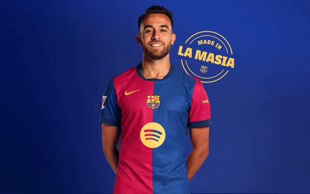

Miesten edustusjoukkue
Maalivahdit
1 Marc-André ter Stegen
- Lähtöseura: Borussia Mönchengladbach
- Debyytti: 2014
- Ikä: 32
13 Iñaki Peña
- Lähtöseura: La Masia
- Debyytti: 2021
- Ikä: 25
25 Wojchiech Szczęsny
- Lähtöseura: Juventus
- Debyytti: 2024
- Ikä: 35
Puolustajat
2 Pau Cubarsi
- Lähtöseura: La Masia
- Debyytti: 2024
- Ikä: 18
3 Alejandro Balde
- Lähtöseura: La Masia
- Debyytti: 2021
- Ikä: 21
4 Ronald Araujo
- Lähtöseura: La Masia
- Debyytti: 2019
- Ikä: 26
5 Iñigo Martinez
- Lähtöseura: Real Sociedad
- Debyytti: 2023
- Ikä: 34
15 Andreas Christensen
- Lähtöseura: Chelsea FC
- Debyytti: 2022
- Ikä: 29
23 Jules Kounde
- Lähtöseura: Sevilla
- Debyytti: 2022
- Ikä: 26

24 Eric Garcia
- Lähtöseura: La Masia
- Debyytti: 2021
- Ikä: 24
Keskikenttäpelaajat
6 Pablo Gavira "Gavi"
- Lähtöseura: La Masia
- Debyytti: 2020
- Ikä: 24
8 Pedro Gonzáles "Pedri"
- Lähtöseura: Las Palmas
- Debyytti: 2021
- Ikä: 22
14 Pablo Torre
- Lähtöseura: Racing Santander
- Debyytti: 2022
- Ikä: 22
16 Fermín Lopez
- Lähtöseura: La Masia
- Debyytti: 2022
- Ikä: 22
17 Marc Casadó
- Lähtöseura: La Masia
- Debyytti: 2023
- Ikä: 21
20 Dani Olmo
- Lähtöseura: La Masia
- Debyytti: 2024
- Ikä: 27
21 Frenkie De Jong
- Lähtöseura: Ajax
- Debyytti: 2019
- Ikä: 28
Hyökkääjät
7 Ferran Torres
- Lähtöseura: Valencia CF
- Debyytti: 2022
- Ikä: 25
9 Robert Lewandowski
- Lähtöseura: Borussia Dortmund
- Debyytti: 2022
- Ikä: 34
10 Ansu Fati
- Lähtöseura: La Masia
- Debyytti: 2019
- Ikä: 22
11 Raphinha
- Lähtöseura: Leeds United
- Debyytti: 2022
- Ikä: 28
18 Pau Víctor
- Lähtöseura: La Masia
- Debyytti: 2024
- Ikä: 23
19 Lamine Yamal
- Lähtöseura: La Masia
- Debyytti: 2023
- Ikä: 17